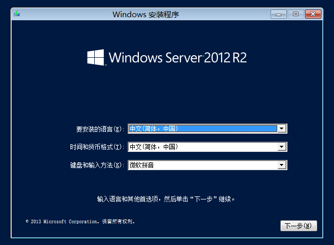

第一台Windows Server 2012 AD域控搭建
首先打开网站https://msdn.itellyou.cn，下载操作系统，然后在VMware虚拟机中新建虚拟机安装系统，安装过程省略。  我这里修改主机名为AD，配置固定IP地址，就可以愉快地进入主题了。 之前几步直接点“下一步” 继续默认“下一步”到下图界面 根据服务器配置等待5-10分钟 然后点击“小旗子”通知信息，点击“将此服务器提升为域控制器” 填写测试环境qwert.local 会有错误提示，因为没有安装DNS服务器 在安装域控服务器时提示“新建域时，本地administrator账户将成域Administrator账户。无法新建域，因为本地administrator账户密码不符合要求。”错误！ 解决方法（实测有效）：命令行net user administrator /passwordreq:yes 黄色警告可以忽略（写过代码的会做相同处理/laugh），安装完系统自动重启 登录后，打开服务器管理器，可看到AD相关的工具 至此，第一台AD搭建完成。